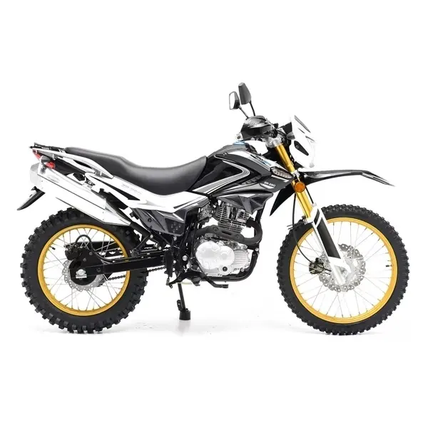
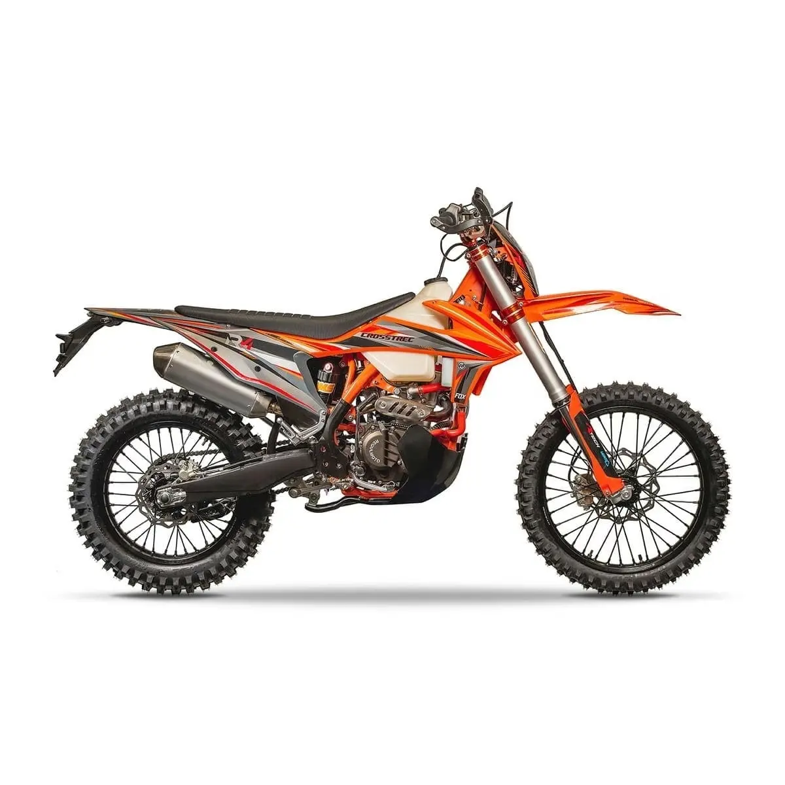
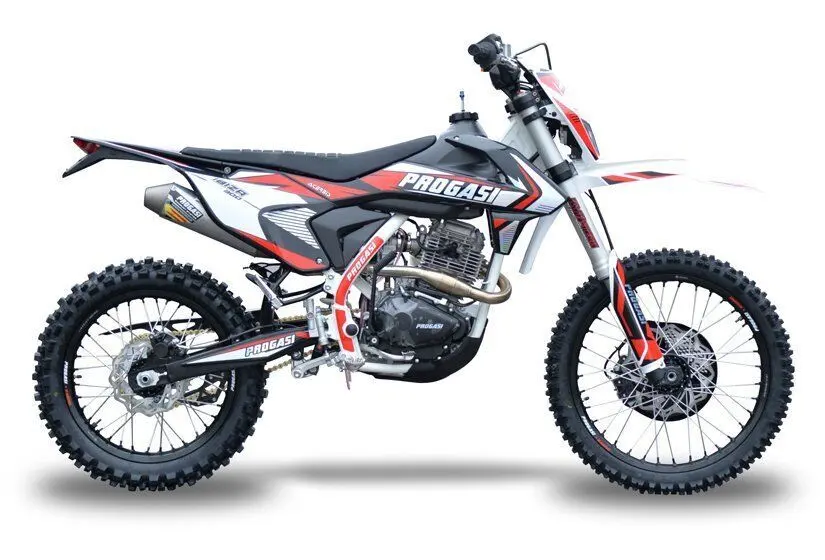
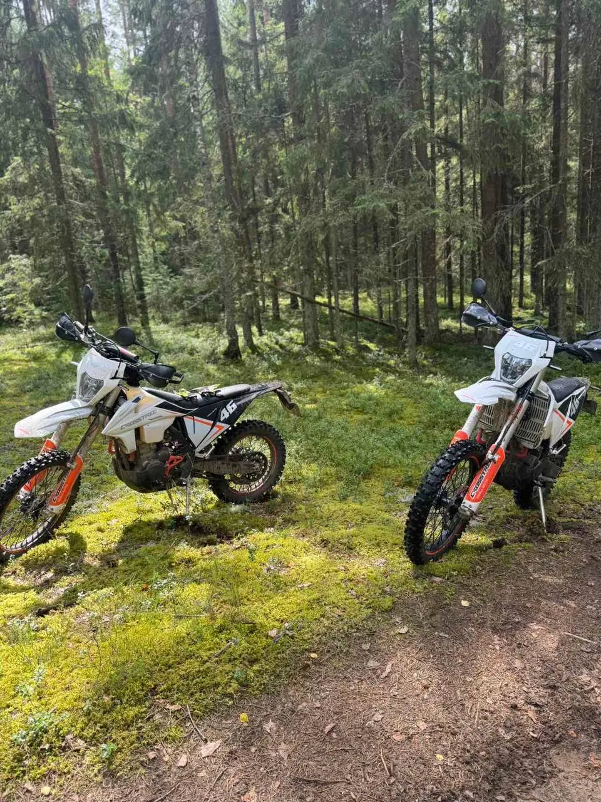

Начать с удовольствием
С инструктором
2 часа · для знакомства с эндуро
150 BYN
Будни — 150 / выходные — 180 BYN
- Сопровождение инструктора
- Подбор техники по росту и опыту
- Комплект защиты и инструктаж
За город — за впечатлениями
Поменяйте привычные выходные на лесные тропы. С инструктором для первого раза или на целый день — для тех, кто уже в седле.
Прокат эндуро в Минске
Первый раз или уже уверенно в седле? Выбирайте поездку под свой опыт.
Тарифы на понедельник — пятницу
Экипировка и полный бак включены.
Доставка при аренде на 12 часов: 50 BYN в радиусе 10 км от Минска.
Прицеп: 40 BYN в будни / 50 BYN в выходные.
Начать с удовольствием
2 часа · для знакомства с эндуро
Будни — 150 / выходные — 180 BYN
Для опытных райдеров
12 часов · без инструктора
Будни — 180 / выходные — 200 BYN
Подберём под ваш рост и опыт
Три модели 2025 года.
Наличие на дату уточним при записи.



Приезжайте за эмоциями
Подготовленная техника, полный бак и подбор модели по росту и опыту.
Шлем, защита тела, перчатки, мотоштаны, наколенники и мотоботы.
Объясним управление и подберём сложность. В двухчасовом формате вас сопровождает инструктор.

Фотографии нашей техники
Техника, маршруты и моменты,
ради которых хочется повторить.
Да. Для первой поездки выбирайте двухчасовой прокат с инструктором. Начинаем с подбора мотоцикла, экипировки и инструктажа; темп и маршрут подбираем под подготовку.
Мотоцикл, полный бак и экипировка: шлем, защита тела, перчатки, мотоштаны, наколенники и мотоботы. В двухчасовой формат входит сопровождение инструктора.
База эндуро находится в Минском районе, в деревне Лусково. После согласования времени уточним точку встречи. Необходима предварительная запись.
Да, на 12 часов при наличии опыта: 180 BYN в будни и 200 BYN в выходные. Доставка при такой аренде — 50 BYN в радиусе 10 км от Минска. Условия и маршрут согласуем перед выдачей.
Сменную одежду, питьевую воду и одежду по погоде. В прохладный день пригодится термобельё. Требования к документам и допуску уточните при записи.
Условия допуска зависят от возраста, техники и согласованного маршрута. До бронирования сообщите возраст и опыт: подтвердим, какой формат вам подходит и какие документы нужны. Возможность езды по дорогам общего пользования нужно согласовать отдельно.
На связи, чтобы помочь
Напишите, когда хотите приехать и есть ли опыт. Подберём подходящий формат.
Другие направления 3030